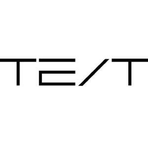

Trade Mark Journal No.2025/029 18 July 2025
UK00004232509 11 July 2025 (9,42)

International priority date claimed: 22 January 2025
(Taiwan)
(114004522)
- Class 9
- Computers and computer hardware; Computer software; Computer software for accessing computer networks; Computer hardware; Hardware (Computer -); Computer diskettes; Computer printer; Computer peripherals; Computer software for use in computer access control; Computer software for the monitoring of computer systems; Computer programs for connecting remotely to computers or computer networks; Tablet computer; Computer software for testing vulnerability in computers and computer networks; Computer mainframes; Computer gaming software; Computer graphics software; Computer systems; Computer keyboards; Computer printers; Computer monitors; Computer modems; Computer software downloadable from global computer networks; Computer databases; Computer programs for video and computer games; Computer software for computer aided software engineering; Computer whiteboard software; Computer software for use in computer network access control; Computer screens; Computer programs; Computer mouse; Computer mouses; Computer motherboards; Computer disks; Computer programming software; Computer application software for use with wearable computer devices; Computer game software downloadable from a global computer network; Computer controllers; Computer servers; Computer programs for searching remotely for content on computers and computer networks; Computer antivirus software; Computer firewall software; Computer software adapted for use in the operation of computers; Computer terminals; Computer networks; Computer software for the detection of threats to computer networks; Computer utility programs for computer maintenance; Computer games software; Computer whiteboards; Computer interfaces; Computer joysticks; Computer software for education; Computer game software; Computer shareware; Computer operating software; Monitors [computer hardware]; Laptop computers; Computer games; Computer network hardware; Computer touchscreens; Computer interface software; Computer software programs; Computer firmware; Computer software downloaded from the internet; Interactive computer software; Computer apparatus; Computer groupware; Computer software for encryption; Computer keypads; Computer software to enable browsing on global computer networks; Computer software for communicating with users of hand-held computers; Computer cabling; Computer mousepads; Computer software for monitoring the use of computers and the internet by children; Computer programs for searching the contents of computers and computer networks by remote control; Computer hardware for telecommunications; Computer software downloadable from global computer information networks; Operating computer software for main frame computers; Wireless computer peripherals; Educational computer software; Computer memory hardware; Computer chips; Computer software for entertainment; Computer telephony software; Computer application software for TV; Computer cables; Computer screen saver software; Microchips [computer hardware]; Recorded computer software; Computer software, recorded; Software (Computer -), recorded; Computer chipsets; Computer software [programmes]; Computer networking hardware; Computer software for use in programming facsimile machines; Computer software to maintain and operate computer system; Computer software supplied from the Internet; Computer keyboard controllers; Computer tapes; Computer plotters; Computer stylus; Computer software for audibly controlling a computer and the operation thereof; Controlling software for computer printers; Computer software applications; Computer programmes; Computer application software; E-commerce software; E-commerce and e-payment software; Computer e-commerce software; Software for designing online advertising on websites; Retail software; Business software; Software for embedding online advertising on websites; Interactive business software; Software for the processing of business transactions; Software for online messaging; Computer e-commerce software to allow users to perform electronic business transactions via a global computer network; Search marketing software; Web development software; Web site development software; Business application software; Business technology software; Web server software; Software for operating an online shop; Business intelligence software; Software for evaluating customer behaviour in online shops; Website development software; Web content management [WCM] software; Business management software; Software for renting advertising space on websites; Software for arranging online transactions.
- Class 42
- Computer and computer software rental; Computer programming of computer games; Rental of computer hardware and computer software; Rental of computer hardware and computer peripherals; Computer rental and updating of computer software; Rental of computers and computer software; Development of computer hardware for computer games; Computer programming; Programming (Computer -); Computer forensics; Computer programming of video and computer games; Time-sharing (Computer -); Computer engineering; Computer programming for the internet; Computer programming and maintenance of computer programs; Writing of computer software; Copying of computer software; Updating of computer software relating to computer security and prevention of computer risks; Computer software engineering; Repair of computer software; Up-dating of computer software; Computer software research; Computer programming for telecommunications; Computer design; Maintenance of computer software relating to computer security and prevention of computer risks; Renting computer software; Software (Rental of computer -); Computer software rental; Computer software (Rental of -); Rental of computer software; Updating of computer software; Software (Updating of computer -); Computer software (Updating of -); Configuration of computer software; Computer software design; Software design (Computer -); Computer software (Design of -); Design of computer software; Hosting of e-commerce platforms on the Internet; Programming of software for e-commerce platforms; Consultancy relating to the creation and design of websites for e-commerce; Maintenance of software used in the field of e-commerce; Consultancy services relating to software used in the field of e-commerce; User authentication services using technology for e-commerce transactions; Hosting an online website for creating and hosting micro websites for businesses; Hosting of mobile websites; Design and development of computer software for logistics, supply chain management and e-business portals; Providing user authentication services using biometric hardware and software technology for e-commerce transactions; Web site design consultancy; Retail design services; Hosting web portals; Hosting of web portals; Development of computer software for logistics, supply chain management and e-business portals; Web portal design; Internet web site design services; Hosting of digital content online; Programming of software for online advertising; Website design consultancy; Design of websites; Business card design services; Design of web sites; Platforms for gaming as software as a service [SaaS]; Web site design services; Platforms for graphic design as software as a service [SaaS]; Programming of software for evaluating customer behaviour in online shops; Hosting of transaction platforms on the internet; Rental of software for website development; Business card design; Design and development of homepages and websites; Web site design and creation services; Development of software solutions for internet providers and internet users; Interior design services for the retail industry.
Taiwan Electronic Information Technologies Corporation
Representative: Jyun-Ming Huang